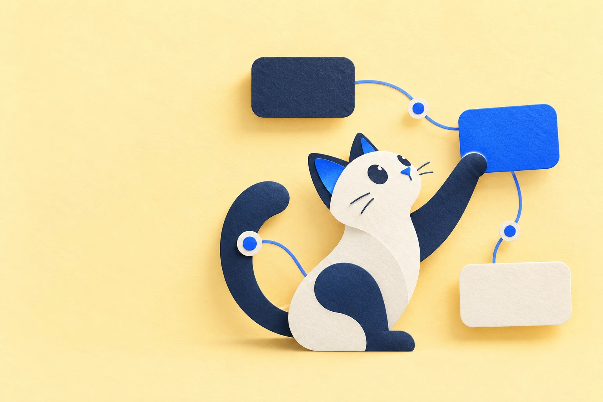

开源的 AI 创作画布 / PI-PAPER DESKTOP
让灵感，
在画布上发生。
your imagination.
01 / A CANVAS FOR CREATION
创作不止是一次生成。
是让每一个想法，都有下一步。
把参考放进来，把故事展开来。让文字成为分镜，让图像走向视频，让零散的片段连接成一条看得见的创作路径。
Think it. Connect it. Make it.展开灵感
文字、故事与制作笔记
看见画面
参考、图像与关键帧
让它发生
视频、音频与合成输出
THE WORKSPACE / 产品实拍
看见过程，也看见作品。
这些画面，来自正在开发的 Pi-Paper 桌面版。
让参考、镜头和结果，连在一起。
一张画布容纳完整的创作上下文。连线保留素材与结果的关系，小P就在旁边，陪你推进下一步。
02 / FROM IDEA TO OUTPUT
从一句想法，
走到下一件作品。
A lot of imagination.
说出想法
和小P聊故事、风格和目标，也可以从一张参考图开始。
展开画布
把角色、分镜与素材组织成节点，让引用关系一目了然。
生成与打磨
选择已配置的模型，确认生成，再在节点里查看和调整结果。
连接成作品
继续编辑、连接镜头与合成，把成果导出到本地。
每一个节点，都是新的可能。
03 / MEET YOUR CREATIVE COMPANION
这位是小P。
你的画布搭子。
灵感有点模糊？没关系。
一起聊聊，把故事捋顺，把参考连好，
再把下一步变成画布上的行动。
小P围绕当前画布协助创作，保留本地会话历史，也支持 Skill 与记忆。生成前由你确认，创作节奏由你掌握。
了解小P的能力与进展
小P / XiaopLet's make something.
项目留在自己的电脑
画布、素材、生成结果和会话本地保存。继续创作，也可以备份和恢复。
用你选择的模型
配置自己的官方 API 凭据，启用已接入的模型；也可连接本地文本服务。能力以当前实现为准。
代码开放，持续生长
MIT 许可。欢迎从一个真实创作场景出发，提出问题、分享反馈或贡献代码。
BEFORE YOU START
开始之前，你可能想问。
Pi-Paper 现在适合谁？
适合想把 AI 创作整理成可编辑工作流的创作者：构思故事、组织参考、制作分镜，以及生成图像、视频和音频。项目处于积极开发阶段，欢迎愿意尝试和反馈的早期使用者。
开源免费，意味着模型调用也免费吗？
Pi-Paper 按 MIT 许可开源。使用云端模型需要自行配置供应商凭据，API 调用可能由供应商收费；可调用的模态和输入方式取决于当前已实现的模型适配。
本地保存，意味着数据不会离开电脑吗？
项目文件和结果保存在本机。选择云端模型时，请求所需的提示词、选定上下文或参考媒体会发送给你选择的供应商，具体范围在模型配置中披露。本地文本服务与云端模型的能力不同。
如何下载安装？
在下方选择 Windows、macOS 或 Linux，前往 GitHub Releases 获取对应安装包。首次使用请按桌面指南配置模型。安装包可用不代表所有平台、模型与长时间恢复场景都已完成验证，请同时阅读版本说明。
目前有哪些使用边界？
当前是单用户桌面工作台，一个项目保存一张画布。完整 UI 与领域能力对照、各模型真实账号生成和各平台安装体验仍在持续验证。最新进展以仓库的功能规格与版本说明为准。
OPEN SOURCE. OPEN POSSIBILITIES.
DESKTOP / v0.1.0下一件作品，
从你的灵感开始。
下载 Pi-Paper，把创作放回同一张画布。
也欢迎在 GitHub 留下一颗 Star，
一起看它慢慢长成。
前往 GitHub Releases 选择对应安装包与查看更新说明。桌面版持续开发中，建议先以测试项目体验。